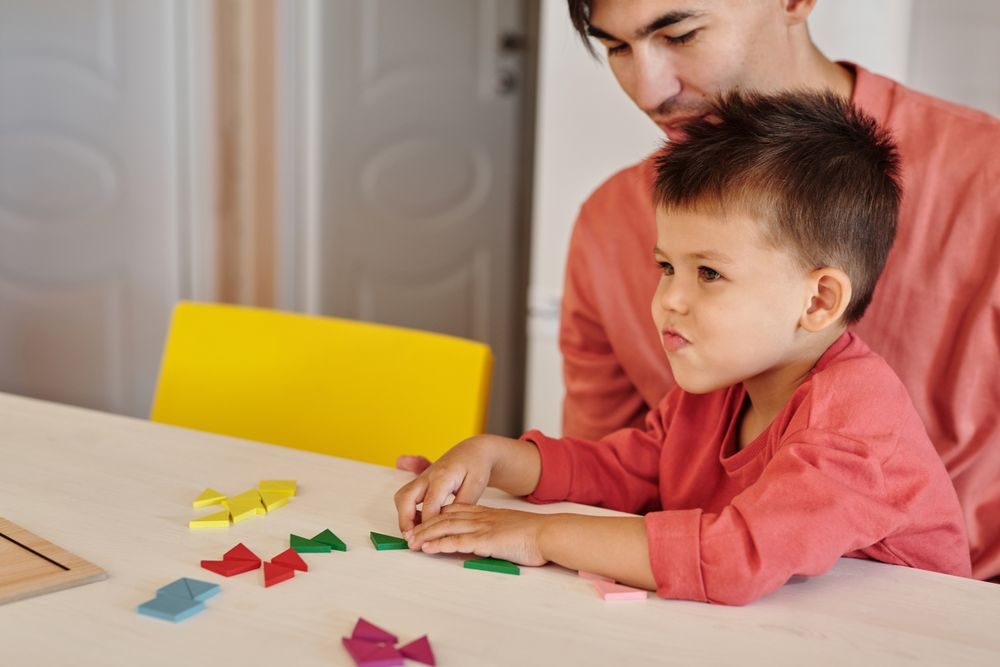
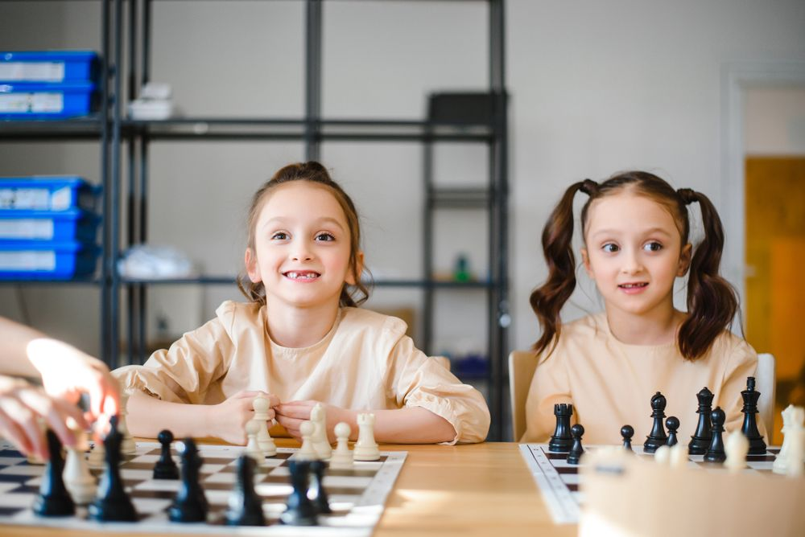
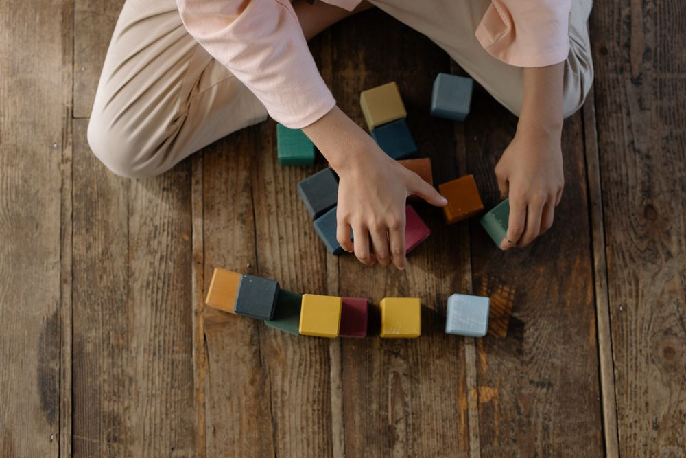
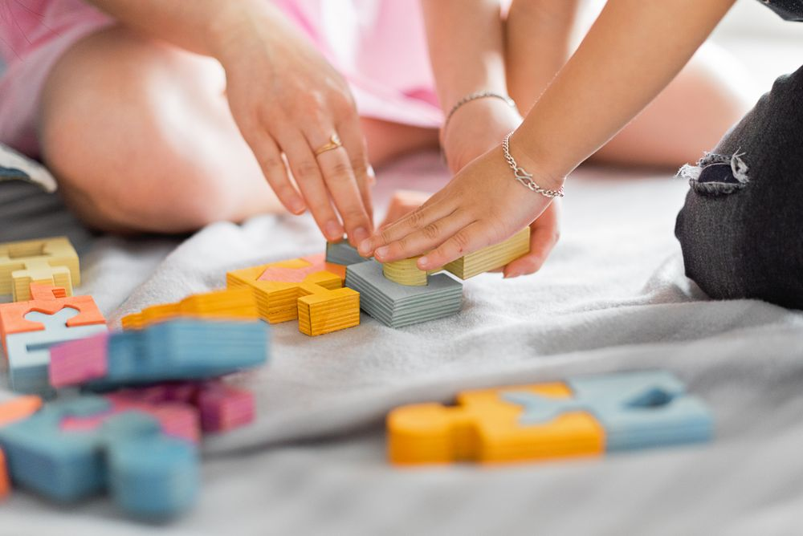
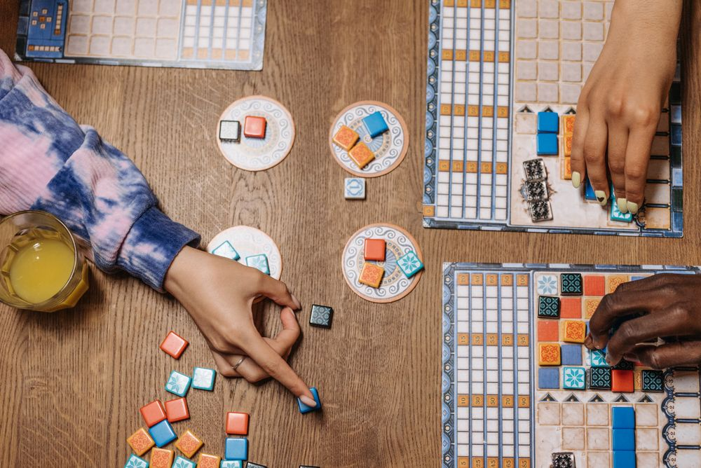
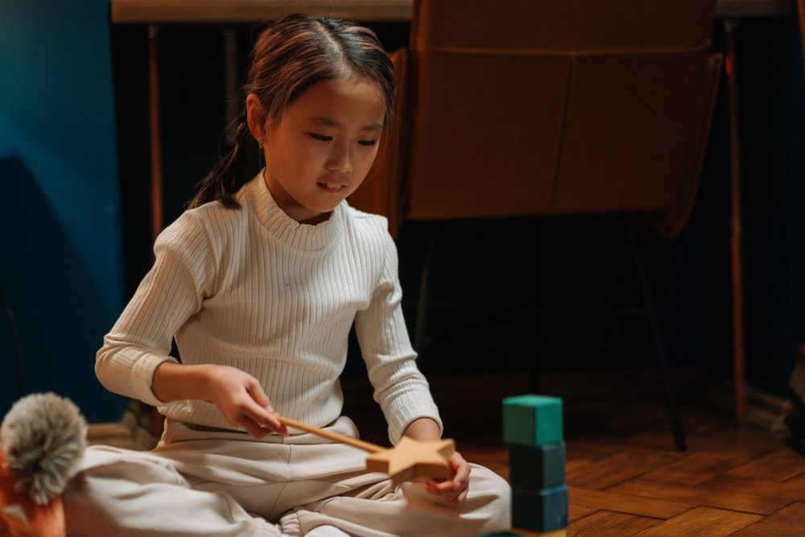

Seven pieces, one square.칠교 일곱 조각으로 도형 감각을
Shape class · 초1–2 도형반 · 화 · 목 16:00
See the class · 도형반 ›

Weekly puzzle이번 주 퍼즐
성냥개비 12개로 만든 정사각형 4개. 개비 2개만 옮겨 정사각형 7개를 만들어 보세요.
힌트 보기
크기가 다른 정사각형도 셉니다. 큰 네모 안에 작은 네모를 겹쳐 보세요.
Four rooms, four ages7세부터 초6까지, 한 반 6명
In class this month이번 달 수업 장면




- A펜토미노 12조각7세 · 초1–2
- B칠교 2세트도형반
- C논리 카드 60장전략반
- D입체 퍼즐 1종경시반
우리 아이 반 찾기
처음이면 30분 사고력 진단부터 ›| 반 | 화 | 수 | 목 | 금 | 토 |
|---|---|---|---|---|---|
| 7세 Play | 15:00 | 15:00 | 10:00 | ||
| 초1–2 Shape | 16:00 | 16:00 | |||
| 초3–4 Logic | 16:30 | 16:30 | 11:00 | ||
| 초5–6 Challenge | 18:00 | 18:00 | 13:00 |